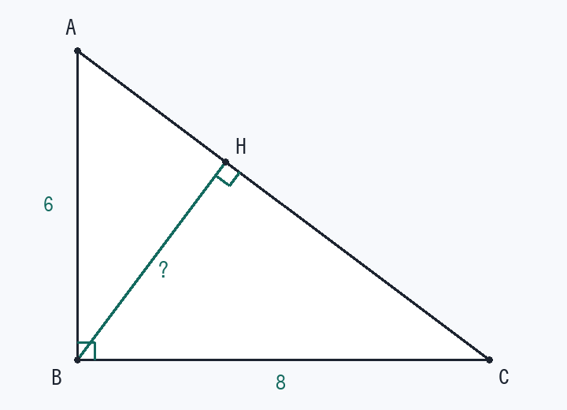

第2回 三平方の定理と、面積2通りで垂線を出す
∠B = 90°、AB = 6、BC = 8 の直角三角形 ABC で、B から AC におろした垂線の足を H とする。BH の長さを求めよ。

解法の型
斜辺に垂線がおりている図を見たら、面積を2通りで表す。
相似で比を立てても解けますが、面積2通りのほうが速く、ミスが少ないです。
解答手順
- 三平方の定理で斜辺AC² = 6² + 8² = 100 → AC = 10
3 : 4 : 5 の3倍。この比は暗記しておきます。
- 面積その1（直角をはさむ2辺）S = ½ × 6 × 8 = 24
- 面積その2（斜辺を底辺に見る）S = ½ × AC × BH = ½ × 10 × BH
- 等号でつないで解く½ × 10 × BH = 24 → BH = 24/5 = 4.8
検算：垂線は「いちばん短い距離」なので BH < AB = 6、BH < BC = 8 を満たすはず。4.8 は両方より小さく、斜辺の半分 5 より少し小さいという感覚とも合います。
覚えるべきこと（在庫に入れる1行）
斜辺への垂線 → 面積2通り → 方程式
類題（翌日、何も見ずに）
- ∠B = 90°、AB = 5、BC = 12 のとき BH
答え
AC = 13、S = 30 より ½·13·BH = 30、BH = 60/13
- ∠B = 90°、AB = 3、BC = 3 のとき BH
答え
AC = 3√2、S = 9/2 より BH = 3/√2 = 3√2/2
- 3辺が 6, 8, 10 の三角形で、長さ10の辺を底辺としたときの高さ
答え
直角三角形なので同じく 4.8
← 第1回 連続する2数の積の和 ｜ 第3回 正方形2つと七角形の面積 → ｜ 高校受験数学の一覧に戻る
動画の音声ナレーション
解説の全文を読む
- こんにちは。知多丸の落ちこぼれ救済チャンネルです。難関大学に合格して、錯覚資産を手に入れて、一流企業に入社しよう。今日は図形です。直角三角形 エービーシー があります。角ビー が 90度、エービー が 6、ビーシー が 8。頂点ビー から、辺 エーシー に垂線をおろし、その足を エイチ とします。ビーエイチ の長さを求めなさい。
- 型はこれです。直角三角形の斜辺から垂線がおりている図を見たら、面積を2通りで表す。相似を使って比を立てる方法もありますが、面積2通りのほうが速くて、ミスが少ない。これが要領です。
- 手順1。まず斜辺 エーシー を出します。三平方の定理で、エーシー の2乗 は、6の2乗 プラス 8の2乗、36 プラス 64 で、100。ですから、エーシー は 10。3、4、5 の3倍の形ですから、覚えていれば一瞬です。
- 手順2。面積を、1通り目で表します。角ビー が 直角ですから、エービー と ビーシー が、そのまま底辺と高さです。2分の1 かける 6 かける 8 で、24。
- 手順3。同じ面積を、2通り目で表します。今度は、エーシー を底辺と見ます。すると高さは、ビーエイチ。ですから、2分の1 かける 10 かける ビーエイチ。これが 24 と等しい。
- 手順4。方程式を解きます。5 かける ビーエイチ が 24。ですから、ビーエイチ は、5分の24。小数で書くと、4.8 です。これが答えです。
- 検算です。ビーエイチ は、直角の頂点から斜辺までの、いちばん短い距離。ですから、エービー の 6 や、ビーシー の 8 より短くなければおかしい。4.8 は、両方より短い。だいじょうぶです。さらに、斜辺の半分の 5 より少し短い、という感覚も合っています。
- おまけです。相似を使うと、エーエイチ と シーエイチ も出せます。ビーエイチ の2乗 イコール、エーエイチ かける シーエイチ、という関係もありますが、まずは面積2通りだけ確実にしてください。1つの型を確実にするほうが、点になります。チャンネル登録をして、次の動画でも一緒に、要領よく積み上げていきましょう。